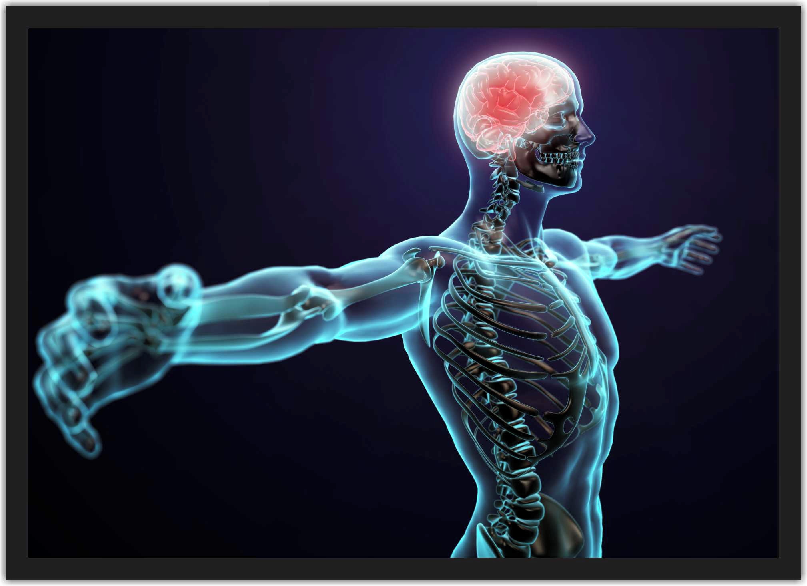
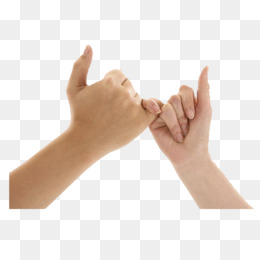
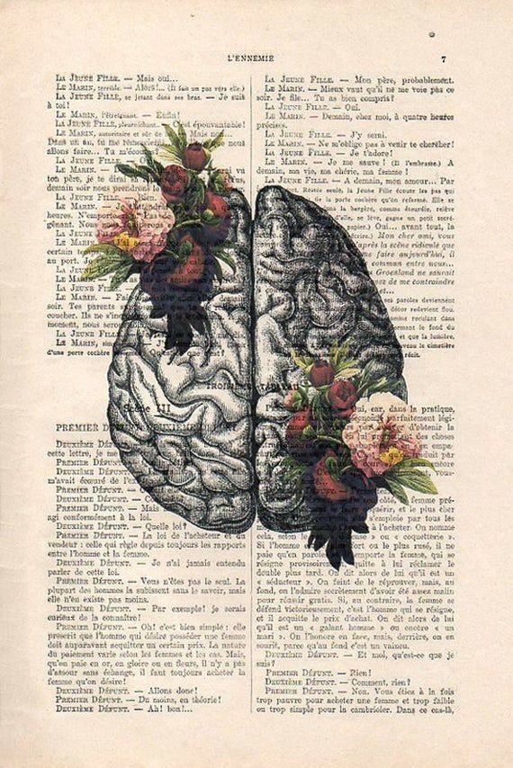
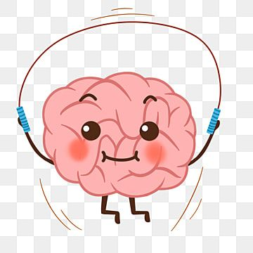

Curiosidades:
-

Sem o dedo mínimo, você perderia cerca de 50% da força da mão. Afirmou Laurie Rogers. Ela explicou que apesar dos dedos indicadores e médios, junto com o polegar, funcionarem para pinçar e agarrar objetos – fechando zípers, abotoando botões – os dedos mínimos se juntam ao anelares para dar força à mão.

Você é cerca de 1cm mais alto de manhã quando se levanta do que quando vai para a cama. Isso ocorre porque durante o dia a cartilagem entre os ossos é esmagada e comprimida.
Seu cérebro às vezes fica mais ativo quando você está dormindo do que quando está acordado.Isso acontece porque enquanto estamos acordados, nossos neurônios estão constantemente em forte atividade, formando novas sinapses, ou conexões, com outros neurônios. Quanto mais tempo você passa acordado, mais ligações são formadas.

Os folículos do seu cabelo estão vivos (mas o seu cabelo, não!)

Seu pulmão esquerdo é cerca de 10% menor que o direito.
Seus olhos piscam cerca de 20 vezes por minuto. Isso é mais de dez milhões de vezes por ano!
Os bebês nascem com aproximadamente 300 ossos, mas à medida que crescem, alguns desses ossos se fundem. Quando chegam à idade adulta, têm apenas 206 ossos.